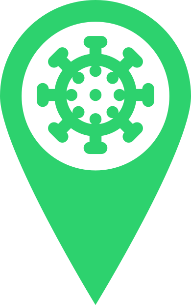
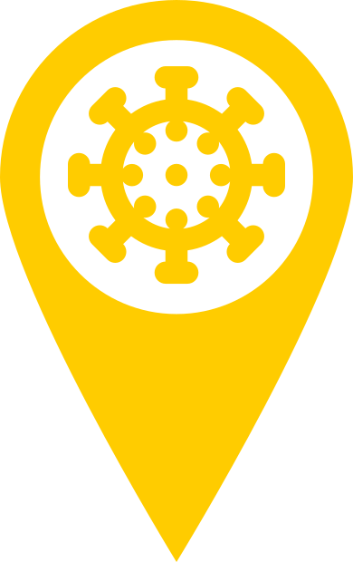
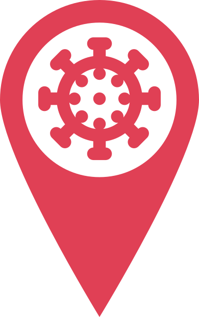

<ion-header>
  <ion-toolbar>
    <ion-buttons>
      <ion-menu-button></ion-menu-button>
      <ion-title class="ion-text-center ion-text-wrap">
        CovAway
      </ion-title>
      <ion-button *ngIf="!isTracking" slot="end" size="small" shape="round" fill="outline" color="light" (click)="startTracking()">
        <!-- <ion-icon slot="icon-only" slot="start" name="locate" class="localIconColor"></ion-icon> -->
        EXIBIR NO MAPA
      </ion-button>
      <ion-button *ngIf="isTracking" slot="end" size="small" shape="round" fill="outline" color="danger" (click)="stopTracking()">
        <!-- <ion-icon slot="icon-only" slot="start" name="hand-right-outline" class="handIconColor"></ion-icon> -->
        PARAR EXIBIÇÃO
      </ion-button>
    </ion-buttons>
  </ion-toolbar>
</ion-header>

<ion-content>
  
  <div #map id="map"></div>

  <!-- Fab button embaixo à direita -->
  <ion-fab vertical="bottom" horizontal="end" slot="fixed">
    <ion-fab-button class="fabCor">
      <ion-icon name="information-circle-outline"></ion-icon>  
    </ion-fab-button>
    <ion-fab-list side="top">
    <ng-container>
      <ion-fab-button>
        
      </ion-fab-button>
      <ion-label>Risco Baixo</ion-label>
    </ng-container>
    <ng-container>
      <ion-fab-button>
        
      </ion-fab-button>
      <ion-label>Risco Médio</ion-label>
    </ng-container>
    <ng-container>
      <ion-fab-button>
        
      </ion-fab-button>
      <ion-label>Risco Alto</ion-label>
    </ng-container>
    </ion-fab-list>
  </ion-fab>

</ion-content>
